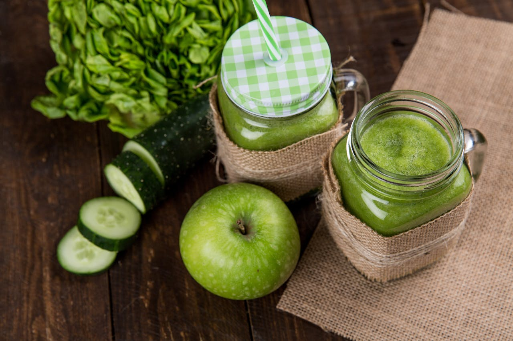
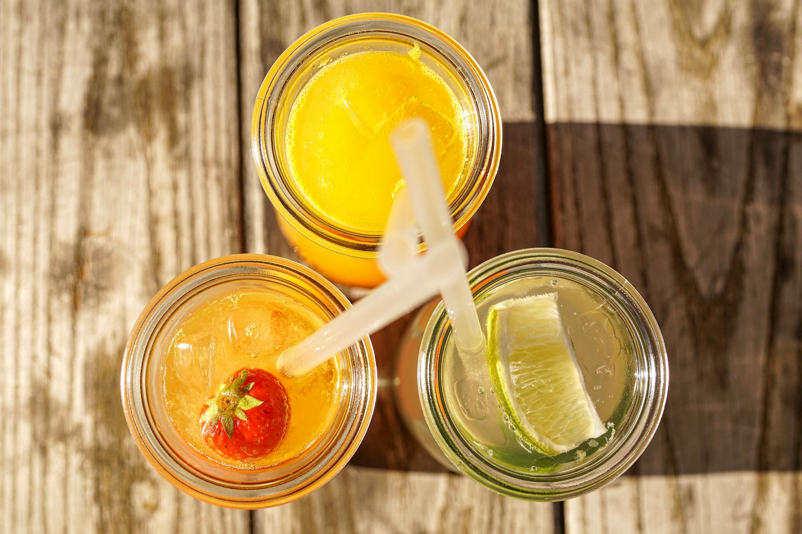
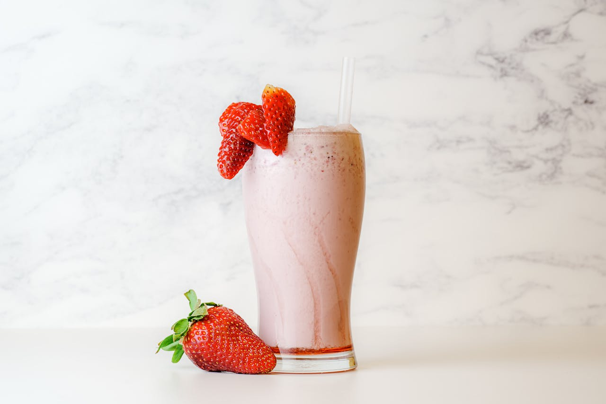

COMP 7780 Special Topics in Knowledge and Information Management
Team no. 10, Team Name: HKBU team
Tikdrink Online Shop
We have a variety of drinks, including milk tea, coffee, juice, and
other drinks. We have a variety of flavors, including original, milk
tea, coffee, and other flavors. We have a variety of sizes, including
small, medium, and large. We have a variety of toppings, including
pearls, pudding, and other toppings. We have a variety of ice levels,
including regular ice, less ice, and no ice. We have a variety of
sugar levels, including regular sugar, less sugar, and no sugar. We
have a variety of temperatures, including hot, warm, and cold.
All sales Final - No refund or exchange.
Once we received your payment, we will contact you for delivery.
Hot Products!



Products for sale!
Milktea
Product
Unit Price
Remarks
Introduction
bubble milktea
$48
Bubble milk tea is a tea-based drink that originated in Taiwan in
the early 1980s. It most commonly contains tea accompanied by
chewy tapioca balls, also known as pearls or boba. It is a
refreshing drink that can be served hot or cold.
coffee
$38
Coffee is a brewed drink prepared from roasted coffee beans, the
seeds of berries from certain Coffea species. The genus Coffea is
native to tropical Africa and Madagascar, the Comoros, Mauritius,
and Réunion in the Indian Ocean.
strawberry milkshake
$28
A milkshake is a sweet, cold beverage that is usually made from
milk, ice cream, or iced milk, and flavorings or sweeteners such as
butterscotch, caramel sauce, chocolate syrup, or fruit syrup.
Juice
Product
Unit Price
Remarks
Introduction
green juice
$18
Green juice is a drink made from the extraction or pressing of
the natural liquid contained in fruit and vegetables, such as cucumber,green apple and so on.
orange juice
$24
Orange juice is a liquid extract of the orange tree fruit, produced by squeezing or reaming oranges.
red juice
$26
Red juice is a drink made from the extraction or pressing of
the natural liquid contained in fruit and vegetables, such as strawberry, cherry and so on.
Alcoholic Beverage
Product
Unit Price
Remarks
Introduction
Cool
$58
"Cool" is a cocktail made with gin, lemon juice, and sugar, and
topped with soda water. It is a classic cocktail that is easy to make.
lemon cocktail
$38
Lemon cocktail is a cocktail made with lemon juice, gin, and sugar,
and topped with soda water. It is a refreshing drink that is perfect
for a hot summer day.
Blood
$68
"Blood" is a cocktail made with vodka, tomato juice, and spices. It is
a classic cocktail that is perfect for brunch or a night out.